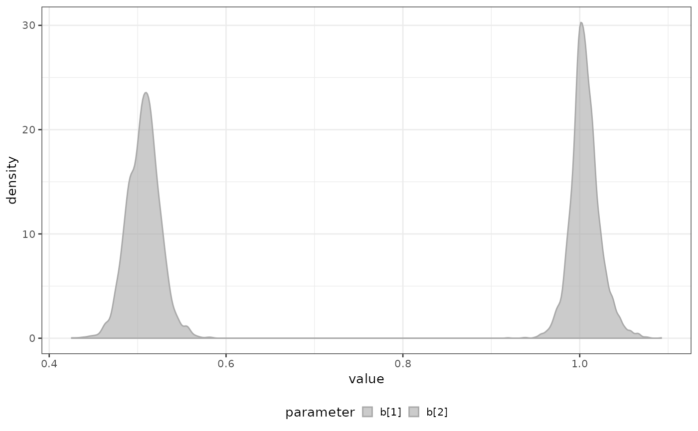

Identify and Fit Optimal Breakpoints in Population Growth Data
fit_breakpoints.RdAnalyzes population growth data to detect significant changes in growth patterns by:
Fitting piecewise linear models to log-transformed count data
Implementing model selection to determine optimal number of breakpoints
Identifying precise positions of growth pattern changes
Assigning data points to their respective growth segments
Usage
fit_breakpoints(
x,
norm = TRUE,
n_trials = 500,
avg_points_per_window = 3,
available_changepoints = c(0:5),
model_selection = "LOO",
n_core = 4
)Arguments
- x
A bipod object containing time series data of population counts
- norm
Logical indicating whether to standardize the data (mean 0, SD 1) before fitting. Standardization applies to both time and count data. Default is TRUE
- n_trials
Integer controlling optimization iterations. Higher values increase likelihood of finding global optima at the cost of longer computation time. Default is 500
- avg_points_per_window
Integer specifying minimum average data points required between breakpoints. Prevents overfitting by ensuring adequate data density per segment. Default is 3
- available_changepoints
Integer vector defining the range of breakpoint numbers to consider during model selection. For example, c(0:5) evaluates models with 0 to 5 breakpoints. Default is 0:5
- model_selection
Character string specifying model selection criterion: * "LOO": Leave-One-Out cross-validation (recommended) * "AIC": Akaike Information Criterion * "BIC": Bayesian Information Criterion Default is "LOO"
- n_core
Integer specifying number of CPU cores for parallel processing. Default is 4
Value
An enhanced bipod object containing:
breakpoints_fit: Fitted breakpoint model
metadata$breakpoints: Vector of identified breakpoint positions
counts$group: Factor indicating segment membership for each observation
Examples
# Create a bipod object with your data
data = biPOD::sim_stochastic_exponential(
100,
c(rep(1,5), rep(0,5), rep(1,5)),
c(rep(0,5),rep(.25,10)),
15,
.1
)
# Fot your dataset
x = biPOD::init(data, "sample w.o breakpoints")
#>
#> ── biPOD - bayesian inference for Population Dynamics ──────────────────────────
#>
#> ℹ Using sample named: sample w.o breakpoints.
x = biPOD:::fit_breakpoints(x, n_core=1)
#> ℹ Intializing breakpoints...
#> ℹ Breakpoints optimization...
#> ℹ Choosing optimal breakpoints...
#> ℹ Median of the inferred breakpoints have been succesfully stored.
# Plot inferred breakpoints
biPOD::plot_breakpoints_posterior(x)
